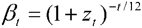
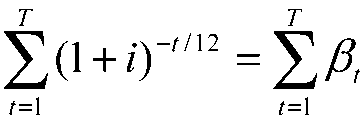

Le montant du crédit d'impôt accordé à l'établissement de crédit ou la société de financement pour compenser l'absence d'intérêts perçus sur un prêt ne portant pas intérêt est le produit du montant du prêt par un taux S. Le taux S, calculé chaque trimestre, est le résultat du produit de deux termes, arrondi à la quatrième décimale :
1° La somme, actualisée par les facteurs d'actualisation définis au quatrième alinéa, des différences de mensualités entre deux prêts de 1 € : d'une part, un prêt à mensualités constantes de même durée totale de remboursement que le prêt ne portant pas intérêt, consenti au taux d'intérêt de référence i, augmenté d'une prime p, et, d'autre part, un prêt sans intérêt de mêmes caractéristiques d'amortissement que le prêt ne portant pas intérêt ;
2° L'inverse de la moyenne des facteurs d'actualisation à 6, 18, 30, 42 et 54 mois.
Pour chaque maturité t (en mois), le facteur d'actualisation β t est calculé à partir de la moyenne zt des taux d'intérêt zéro-coupon du marché interbancaire de même maturité observés entre le 10e jour du 2e mois et le 10e jour du dernier mois du trimestre précédant l'offre de prêt :

Le taux d'intérêt de référence i est le taux d'intérêt annuel qui annule la valeur actualisée nette, actualisée à partir des facteurs définis à l'alinéa précédent, d'un prêt à remboursements constants de même durée que le prêt ne portant pas intérêt (notée T mois) consenti à ce taux i :

La prime p est fixée, en fonction de l'appartenance à l'une des tranches mentionnées à l'article L. 31-10-12 du code de la construction et de l'habitation, dans le tableau ci-après :
| TRANCHES | 1 | 2 À 4 |
|---|---|---|
|
Prime p |
75 points de base |
55 points de base |
Dans ce qui précède, la durée de la première période de remboursement du prêt est arrondie au multiple inférieur de six mois.
Le taux S ainsi calculé par l'organisme mentionné au cinquième alinéa de l'article L. 312-1 du code de la construction et de l'habitation, est applicable aux prêts ne portant pas intérêt faisant l'objet d'une offre de prêt au cours d'un même trimestre.